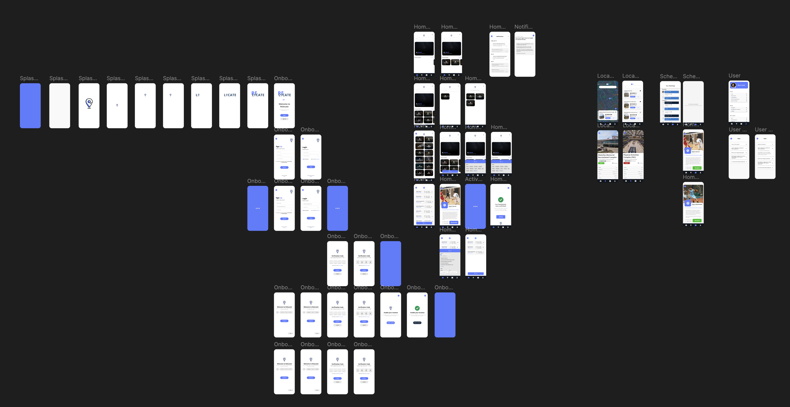

How we got there
From rough sketches to tested prototypes, every iteration taught us something new.

Paper prototypes
Quick pen-and-paper explorations helped us test flows without getting attached to pixels. We learned users wanted clear tasks before customization.

Low-fi prototype
Clickable wireframes walked users through filters, search, and discovery so we could validate the core flow before styling.

High-fidelity prototype
High-fidelity screens locked in the bright palette, bold typography, and clarified navigation we scoped after M2 feedback.